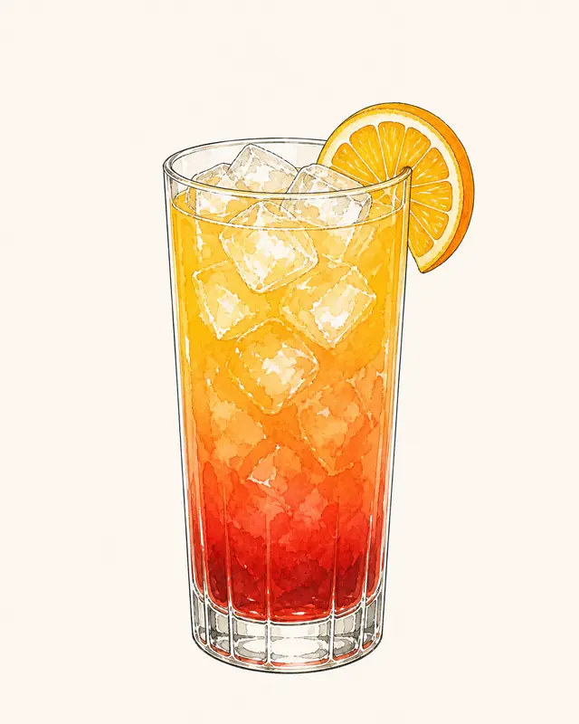

Alkoholfri Tequila Sunrise
Ingredienser
- 6 clAlkoholfri tequila
- 18 clApelsinjuice
- 2,5 clGrenadin
- 1Maraschinobärgarnering
- 1Apelsinskivagarnering
Gör så här
Fyll ett highballglas med is, tillsätt det alkoholfria agavealternativet och apelsinjuicen och rör försiktigt. Häll långsamt i grenadinen över en sked så att den sjunker och garnera med ett maraschinobär och en apelsinskiva.
Källa: Ritual Zero Proof
Öppna i Sipdeck